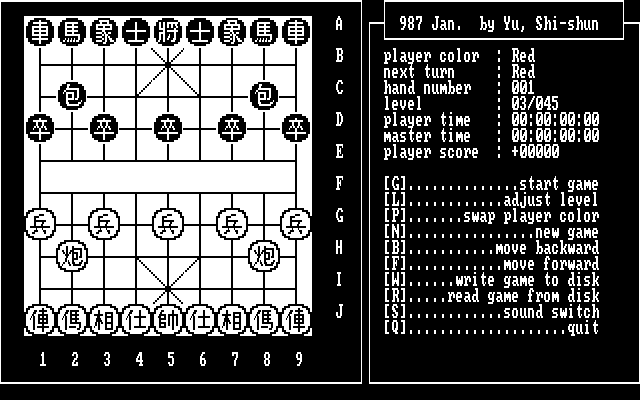

名稱：象棋大師 (Chinese Chess Master，英文版)
簡介：第三波1987年出品的象棋遊戲，作者虞希舜。程式小巧，功能不多，棋力也不高，但
在早期而言，已算是一個不錯的象棋遊戲了。

備註：本版為1.57版。
保護：無
備註：同名遊戲若標示作者為Fatma、Kan, Wai-Fu者，均為私自修改本遊戲，並非其作品。
備註：將本遊戲的棋力Level設定為6/45（等級太高思考時間會太久），與將族
下，約與最差的笨豬相當，因此棋力算是頗差。